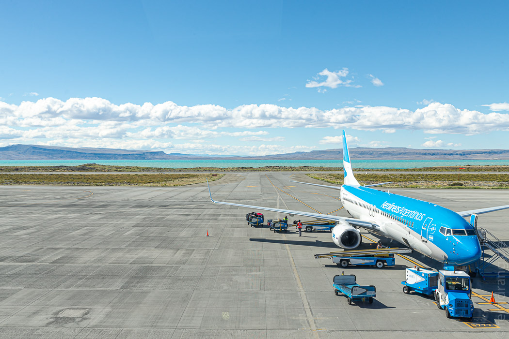
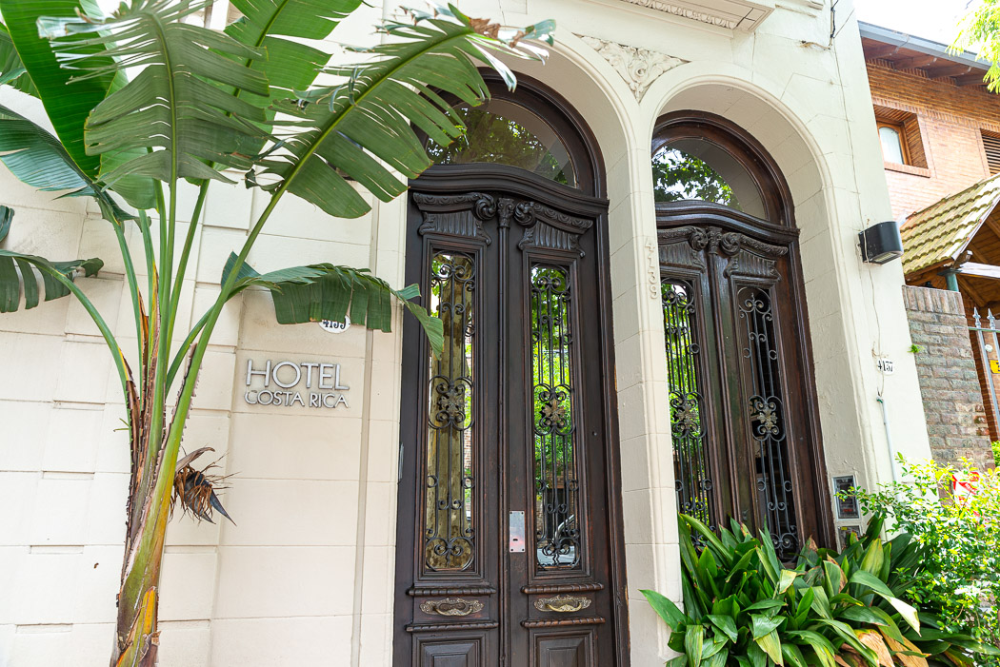

Es war kurz davor, dass uns Wind und Wandern auf die Nerven ging. Daher haben wir unseren Urlaub ein paar tausend Kilometer weiter nördlich in Buenos Aires fortgesetzt.
Der Anflug über die endlose Stadt war ziemlich beeindruckend - ein gigantisches, orange und weiß glitzerndes Netz in der Dunkelheit. Der Stadtflughafen Aeroparque ist so in die Uferlinie integriert, dass die Angst vor einer Wasserlandung vom Grauen vor einer Notlandung auf einer Hauptstraße abgelöst wird. Allerdings gibt es vermutlich keine geeigneteren Straßen dafür als die in BA. Am Ende war es natürlich doch die Landebahn.
Dafür war es nicht weit bis zu unserem „Hotel Costa Rica“, das in einem schönen alten Haus im Viertel „Palermo“ untergebracht ist. Auch wenn es sehr spät war, konnten wir uns zum ersten Mal seit langem auf eine Nacht ohne gestellten Wecker freuen.
